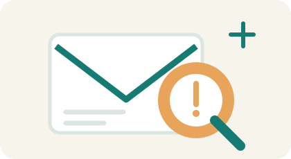

收到訊息時，先看這四件事
- 寄件者：顯示名稱可能被偽造，仔細核對完整電子郵件地址或帳號。
- 連結：不要急著點；查看網址拼字、網域是否與官方一致。
- 語氣：「立即付款」「帳號即將停用」等急迫要求值得提高警覺。
- 索取內容：不透過訊息提供密碼、驗證碼或金融資料。
遇到可疑訊息怎麼辦？
不要回覆或開啟附件。改用官方 App、自己輸入官方網址，或撥打官方公布的電話查證。
不要回覆或開啟附件。改用官方 App、自己輸入官方網址，或撥打官方公布的電話查證。
02 / SPOT THE SCAM
釣魚訊息常假扮成銀行、物流或熟人，誘使你點擊連結、提供資料或下載附件。先停下來查證，通常是最有效的第一步。
